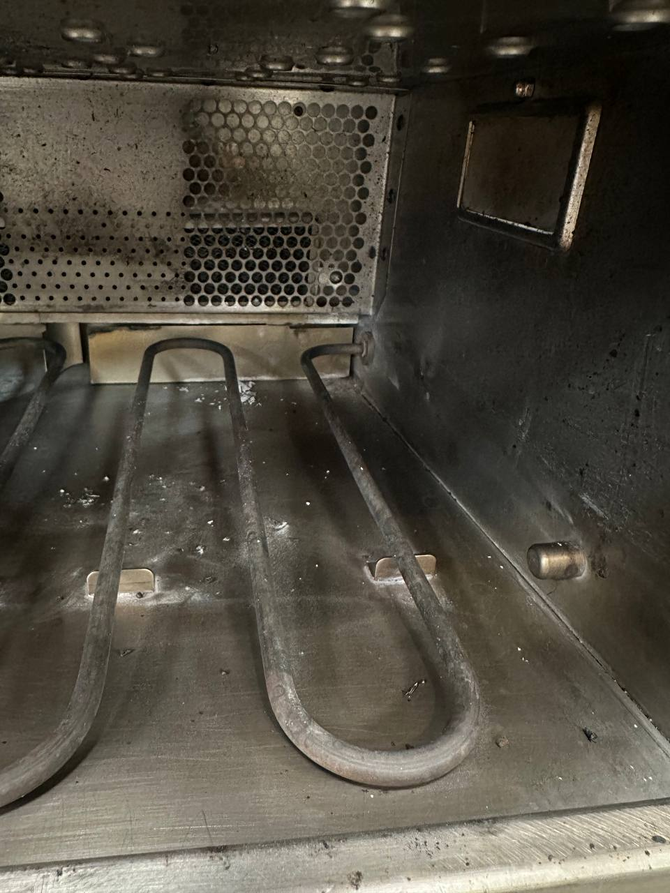

An F8 code means the oven's safety high-limit thermostat tripped and shut the heating system down. The oven will not heat until the cause is found and the fault is cleared. Authorized TurboChef Service Provider. Factory-trained technicians, OEM parts in stock. Serving Seattle, Bellevue, Tacoma, and the greater Puget Sound.
Last updated:
On a TurboChef speed oven, the error code F8 means High Limit Tripped. Every TurboChef has a safety high-limit thermostat — a fail-safe that cuts power to the heating system if the cavity gets too hot. When that limit trips, the oven locks out with F8 and stops heating rather than risk damaging the oven or, worse, creating a fire hazard. The code can also appear as “Heat Low” on some units.
What that means in practice: your oven is down. It may power on, but it won't run a cooking cycle because the heating system is deliberately disabled. The trip happens for a reason — something got too hot, or a component failed in a way that reads as an over-temperature — so simply clearing the code without finding the cause means the fault will come back.
F8 is a fault that needs professional diagnosis. Restricted airflow is the most common root cause, but a failing high-limit thermostat, a stuck heating element, or a control fault can produce the same code. A factory-trained technician verifies the whole heating system — airflow, thermostat, elements, and controls — before resetting anything, and replaces any failed part with a genuine OEM component. Call FixIt Expresso at 425-547-0200.
Need the full code list? See our TurboChef F1–F10 error code guide to identify any fault before you call — we arrive prepared with the right parts.
More than one part of the oven's heating system can trip the high-limit safety, and the code alone doesn't say which — that's why the whole system gets checked before anything is reset or replaced.

If the blower isn't moving enough air through the cavity, heat builds where it shouldn't. Blower faults are closely related to F1 and can contribute to F8 trips.
A heating element or control fault that keeps heat applied too long can drive the cavity past the limit. We test the full circuit before resetting anything.
F7 (RTD failure) sits right alongside F8 in the heating-fault family — F8 is a tripped safety limit, F7 is a failed temperature reading. F3 (Magnetron Current Low) tends to join both on compact-cavity models run hard. All three shut the oven down until a factory-trained technician sorts them out. Call 425-547-0200 for any of the three.
Here's what to expect once you call, whether F8 trips during a quiet stretch or right in the middle of a rush:
Note the F8 (or High Limit / Heat Low) code on the display and your model — Sota, Bullet, Encore, i3, i5, NGC, or another — when you call. That's usually enough for the tech to arrive with the right parts already on hand.
Emergency same-day service is available for a down oven during service hours. Non-urgent F8 repairs can be scheduled, or handled via drop-off for models like Sota and NGO.
Our factory-trained technicians confirm the F8 fault, check airflow and the full heating system — thermostat, elements, blower, and controls — and quote the repair before starting work.
We fix what actually caused the trip — replacing any failed component with genuine OEM parts, and correcting airflow issues so the code doesn't return.
We run a full cook cycle to confirm the oven heats correctly and the fault stays cleared under real load before we consider the job done.
F8 can appear across the TurboChef lineup. Here's how it plays out on the platforms we service most:
High-limit trips (F8) and magnetron failures (F3) are the most common faults on these compact-cavity models. Heat builds fast in the small cavity, so keeping vents clear matters — F8 is the code that shows up when they aren't.
These models most often fail on magnetron current faults (F3), airflow restrictions (F5, F6), and door monitor issues (F4). Restricted airflow here can escalate into F8 trips — another reason regular filter service matters.
Blower motor issues (F1), RTD probe faults (F7), and control-board communication errors (F10) are most common on the Sota, with high-limit trips less frequent than on compact-cavity units. Drop-off service is available.
The i3 and i5 more often show F2 (cook temp low), F6 (EC temp high), and F9 (belt wear). F6 over-temperature codes and F8 high-limit trips both trace back to airflow on these units.
Legacy and specialty platforms we continue to support with OEM parts and factory-trained diagnosis, including double-batch (HhD) and conveyor (HhC) configurations.
F8 always gets diagnosed on-site first, with a clear quote before anything is repaired or replaced. Call 425-547-0200.
Most F8 trips are preventable — a scheduled check catches the underlying issue long before the high-limit has to step in:
Restricted airflow is behind more faults than any single component failure — it's what drives over-temperature conditions before the safety limit has to step in. Clean filters and clear vents are the single cheapest insurance against a mid-shift breakdown.
A blower that's slowing down moves less air and lets heat build in the cavity. Catching blower wear early (before it becomes an F1 or contributes to an F8) is faster and cheaper than an emergency call.
Temperature readings can drift out of spec before a fault locks the oven out. A scheduled inspection catches the creeping inaccuracy early — so the underlying cause can be addressed on your timeline, not the oven's.
F8 means High Limit Tripped — the oven's safety high-limit thermostat detected an over-temperature condition and shut down the heating system to protect the oven. The oven will not heat until the cause is found and the fault cleared. It requires professional diagnosis. Call FixIt Expresso at 425-547-0200.
F8 can stem from more than one part of the oven's heating system, so the code alone doesn't say which. It shows up more often on compact-cavity models like the Bullet and Encore. A factory-trained technician diagnoses the actual cause on-site rather than guessing from the code.
No. F8 (High Limit Tripped) is a safety shutdown — the limit tripped for a reason, and the oven needs professional diagnosis to find and fix the underlying heating fault. Call FixIt Expresso at 425-547-0200.
Most F8 repairs are completed same-day or within 24-72 hours. We offer emergency same-day service for a down oven. Call 425-547-0200.
F8 is most common on compact-cavity models like the Bullet and Encore, and can appear across the TurboChef lineup. We repair F8 on all current and legacy TurboChef models: Sota (NGO), Bullet, Encore, HhD Double Batch, i3, i5, NGC, ECO, Fire, and more.
Call now or request service online. We respond fast — same-day emergency service available for a down oven.
📞 Call 425-547-0200 Request ServiceTurboChef F8 high-limit repair across the Puget Sound: Seattle • Bellevue • Redmond • Kirkland • Renton • Kent • Tacoma • Everett • Auburn • Federal Way. We're a mobile service based in Renton — our technicians come to your kitchen within roughly 80 miles of Seattle. See TurboChef repair across the Puget Sound for the full picture.